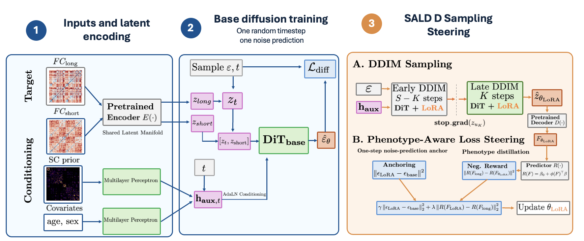
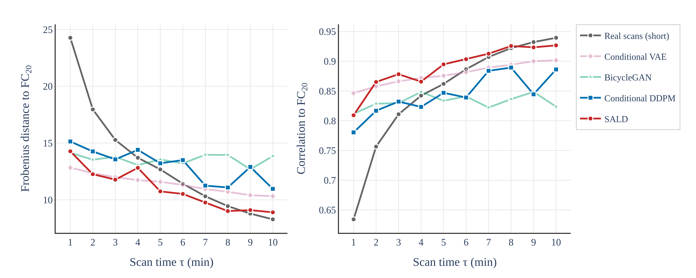
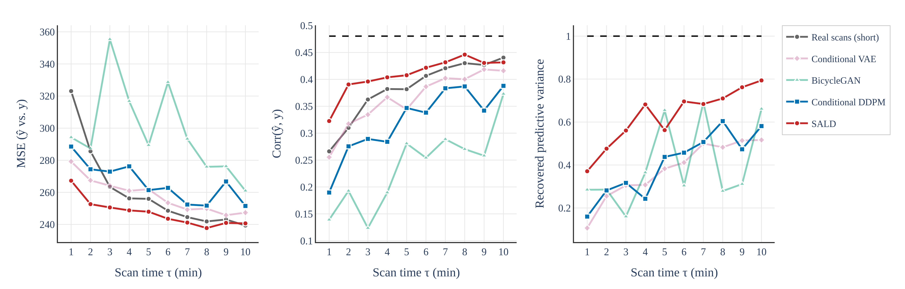
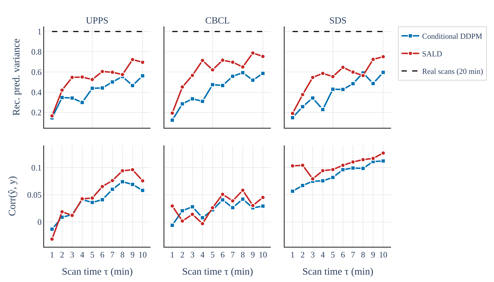

Conditional latent diffusion
A shared VAE maps short- and long-duration FC into one latent manifold. A DiT denoiser then learns the distribution of long-scan FC latents conditioned on the short-scan latent, flattened SC, and covariate embeddings.
Structure-Aware Latent Diffusion
SALD synthesizes long-scan-like functional connectivity from short resting-state fMRI observations by combining short-scan FC, structural connectivity, subject covariates, and phenotype-aware LoRA steering.
University of North Carolina at Chapel Hill · University of Michigan

ABCD scans processed with the SBCI pipeline and Schaefer 100-parcel atlas.
Short-scan input windows transferred toward a 20-minute FC reference.
Evaluation spans reconstruction fidelity, phenotype utility, and identifiability.
Paper
Resting-state functional connectivity (FC) is widely used to model brain organization and predict phenotypes, yet short fMRI acquisitions often yield unreliable estimates. We propose a Structure-Aware Latent Diffusion framework, SALD, to synthesize long-scan-like FC from limited observations. Our model conditions the generation process on short-scan FC, structural connectivity (SC) as a lightweight anatomical prior, and subject-level covariates. Crucially, in the Adolescent Brain Cognitive Development Study (ABCD) cohort, our results suggest a fidelity-utility tension in FC synthesis: likelihood-based diffusion training may improve distributional fidelity while attenuating subtle inter-subject variation relevant to phenotype prediction.
To address this, we introduce a reward-guided Low-Rank Adaptation (LoRA) strategy that distills a guidance signal isolating the FC-congruent portion of phenotype variance, steering generation toward preserving this signal while maintaining sample realism. Experiments on the ABCD cohort show that our method better preserves phenotype-relevant signal in short-to-long FC synthesis, with the most pronounced improvements over short-scan baselines occurring in the low-scan-time regime across the evaluated phenotypes. These findings suggest a promising direction for phenotype-aware short-to-long FC synthesis.
Approach
A shared VAE maps short- and long-duration FC into one latent manifold. A DiT denoiser then learns the distribution of long-scan FC latents conditioned on the short-scan latent, flattened SC, and covariate embeddings.
Structural connectivity acts as a soft anatomical prior, while age and sex are embedded as subject-level context. AdaLN-Zero modulation lets these inputs influence each transformer block during denoising.
LoRA adapters are fine-tuned through the final DDIM denoising steps. A frozen phenotype predictor rewards generated FC that preserves explainable phenotype-discriminative structure, while one-step anchoring limits drift.
Experiments



Takeaways
Scope
SALD is aimed at population-level research rather than individual clinical decisions. The paper evaluates reconstruction fidelity, phenotype utility, and differential identifiability in one ABCD processing configuration. Prospective external validation, uncertainty calibration, robustness across acquisition settings, and clinical safeguards would be required before any diagnostic use.
Reference
@misc{torres2026sald,
title = {Short-to-Long Functional Connectivity Transfer via Structure-Aware Latent Diffusion},
author = {Torres, Benjamin and Liu, Yufeng and Zhang, Zhengwu},
year = {2026}
}